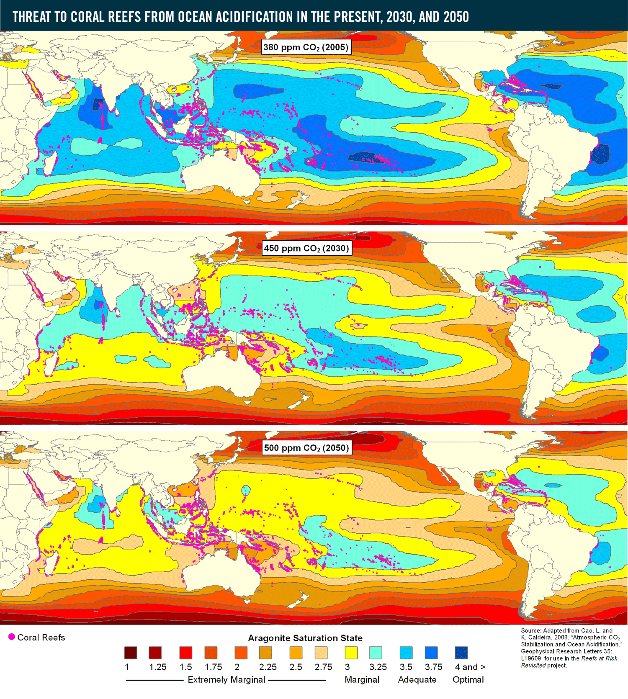

Una de las principales consecuencias del calentamiento global. En otras palabras, las variaciones en el clima que han ocurrido en este ultimo tiempo, se deben a el aumento de la temperatura del planeta provocado por las de gases de efecto invernadero hacia la atmosfera.
La revolución industrial se marca como punto crítico en donde las emisiones de gases de efecto invernadero comenzaron a dispararse dado el nuevo modelo de producción y consumo. Actualmente, esas emisiones han aumentado exponencialmente dado el aumento de demanda de recursos y producción de energía obtenidas mayoritariamente a través de combustibles fósiles.
Cuando estos gases son en cantidades desmedidas, al alojarse en la atmósfera, se retiene más calor del necesario provocando que la temperatura media del planeta aumente y se produzca lo que popularmente llamamos calentamiento global.
La acidez de las aguas de la superficie de los océanos ha aumentado por alrededor de 30% a través de los últimos 250 años y puede hacerse casi 150% más acídica para finales de siglo si los niveles de emisión de CO2 continúan aumentando a ritmo actual. Diferentes regiones del océano son más susceptibles a un aumento en acidificación debido a otros factores como surgencia costera, descarga de ríos o glaciares, pérdida de hielo marino y urbanización.
El mapa de arriba muestra el estado de saturación de aragonito estimado (un indicador de la acidificación del océano) para CO2, niveles de estabilización de 380 partes por millón (ppm), 450 ppm y 500 ppm, que corresponden aproximadamente a los años 2005, 2030 y 2050. Los puntos rosados representan arrecifes de coral. Los colores azules más oscuros representan un estado de saturación de aragonito adecuado para apoyar el crecimiento de los arrecifes de coral; los colores amarillo-turquesa representan áreas de crecimiento marginal del coral, y los colores rojo-naranja representan ambientes extremadamente marginales que probablemente no respalden el crecimiento y la supervivencia del coral. Fuente: WRI 2011
El aumento en acidez del océano disminuye la habilidad de conchas y otras estructuras de carbonato de calcio, como esqueletos de corales, para formarse. Ejemplos de vida marina que se afectan directamente son ostras, almejas, erizos de mar, corales de aguas poco profundas, y ciertas especies de plancton. En una escala más amplia, la incapacidad de estas criaturas de desarrollarse completamente también se impactará negativamente a otros miembros del red alimenticia que se alimentan de ellas, incluyendo salmón, ballenas y humanos.
Para saber que podemos hacer al respecto, e informarte más, visita esta página. No sólo los océanos corren peligro, el mundo entero tal como lo conocemos.